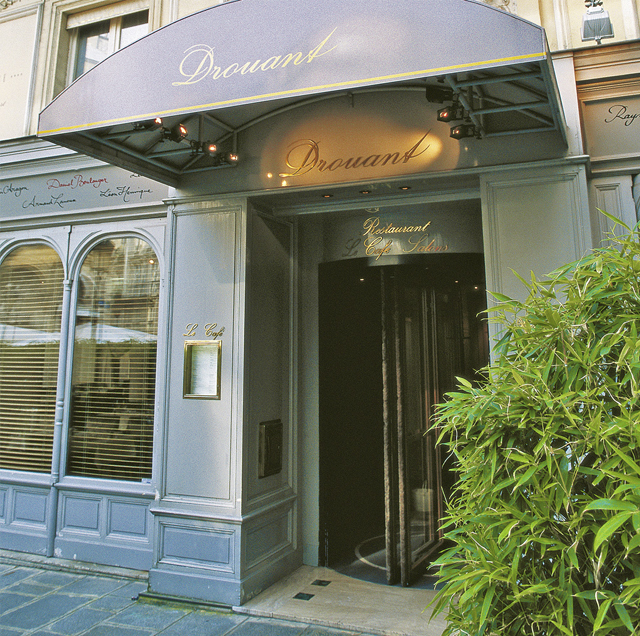
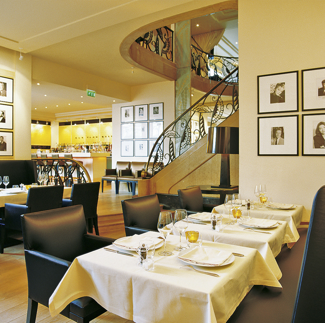

Mit dem Drouant habe ich meine Vorstellungen von einer Brasserie de luxe verwirklicht. Ein Ort mit ungezwungener Atmosphäre und einer hervorragenden Küche. Ein Ort für jedermann ohne steifen Zwang und exorbitante Preise.“ Diese Worte von Antoine Westermann, dessen Restaurant Buerehiesel in Strasbourg in den 90er Jahren mit drei Michelinsternen ausgezeichnet war, haben aufgrund des Backgrounds des Drouant-Créateurs schon fast etwas Revolutionäres an sich. Doch dass er nach dem freiwilligen Ausstieg aus der Sternegastronomie den Zeitgeist getroffen hat und seine Gäste ganz nach seiner Devise glücklich macht, zeigen die stets vollbesetzten Tische seines Restaurants eindrucksvoll. „Glücklich“ machen die Gäste zum einen die prädestinierte Lage in unmittelbarer Nähe der Oper und das Ambiente, das mit einer zeitgeistigen Art-Déco-Interpretation die Tradition der Adresse aufgreift, die schon zu Anfang des 20. Jahrhunderts Künstler und Intellektuelle angezogen hat. Ins Schwarze treffen die speziellen Drouant-Events. Sei es der sonntägliche Brunch „P’tit trainard“, ein „Feuerwerk der Köstlichkeiten“ für 32 Euro, oder seien es die am Samstagabend stattfindenden Wein-Dinner mit Winzern und speziell kreierten Menüs. Die kleinen Gäste sind glücklich über die sehr liebevoll gestaltete Kinderkarte und die großen freuen sich über eine Speisekarte, die größtmögliche Freiheit bietet, denn sie offeriert in Rubriken unterteilt die besten Produkte der Saison und zwar so zubereitet, wie es ihnen am besten zukommt.


{kind=link}
{kind=link}